Быстрый старт
С чего начать
Шаг 1
Создайте категории
Шаг 2
Внесите счета
Шаг 3
Проведите транзакцию
Создайте категории
Бюджет состоит из категорий расходов и доходов. Выберите подходящие категории и запланируйте на них суммы
Как это сделать
Подумайте, какие категории доходов и расходов вы будете планировать. Какие у вас цели, сколько вы зарабатываете и на что будете тратить?
-
В разделе Бюджет нажмите на Доходы, а затем — на Категории. Перед вами появится стандартный список. Выберите подходящую категорию и укажите сумму. Сохраните. Аналогичным образом внесите расходы.
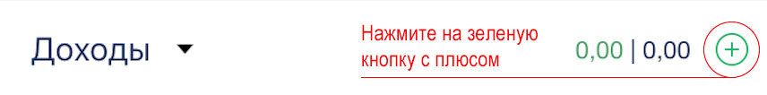 -
Запланируйте все доходы и расходы на месяц. А еще лучше – составьте план на несколько месяцев вперед.
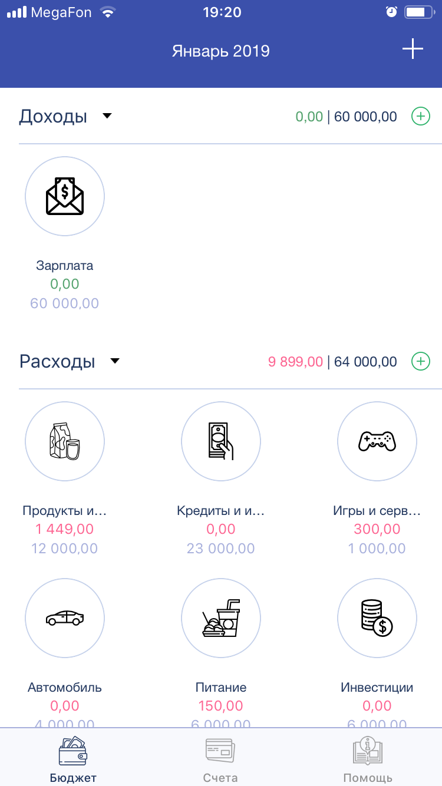
Как настроить категории?
Не исключено, что наш список категорий не совсем подходит вашему стилю жизни. Тогда создайте свой!
- Редактируем существующие
-
Нажмите на плюс в строке расходы или доходы
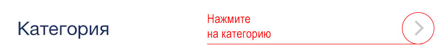 - Выберите любую ненужную вам категорию и проведите пальцем влево 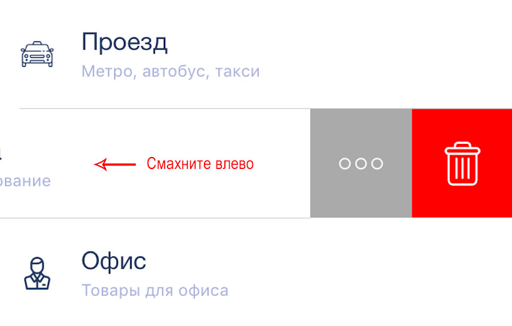
- Редактируем: можно заменить иконку, наименование и комментарий
- В этом меню также можно удалить ненужные категории
-
Нажмите на плюс в строке расходы или доходы
- Создаем новые
-
Нажмите на плюс в строке расходы или доходы
- Затем – на кнопку “добавить” в правом верхнем углу экрана. Выберите иконку, добавьте название и сохраните! 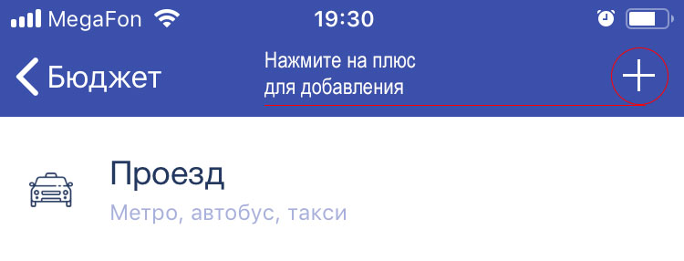
-
Нажмите на плюс в строке расходы или доходы
Внесите счета
Для достижения намеченных целей вам пригодятся деньги (да ладно?). Они хранятся на ваших счетах, в карманах, кошельках, под подушкой. Пришло время собрать все счета в одном месте.
Этот раздел предназначен для отображения счетов, обязательств и активов. Счета демонстрируют ваше финансовое положение на сегодняшний день.
Как добавить счета?
Ваша задача – внести все свои счета и указать балансы/сумму задолженности по каждому из них.
- В разделе Счета нажмите на плюс, введите название и укажите баланс. Затем — сохранить.
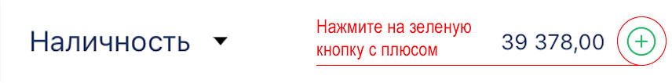
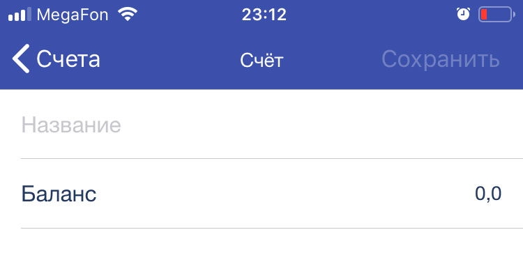 - Создайте в наличности все ваши счета.
Какую сумму указать в кредитных картах?
Мы знаем, что в банк-клиентах вы привыкли видеть сумму доступного лимита, а не задолженности. Но в “Капитале” вам придется быть честным с самим собой! Укажите сумму вашего долга по кредитке. Поверьте, это полезно.
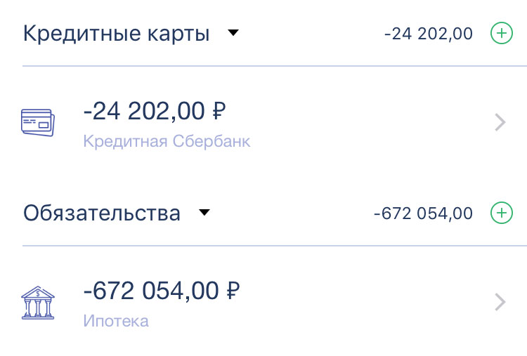Проведите транзакцию
Транзакции — это инструмент, который объединяет ваш бюджет и счета. Как только рука потянулась за кошельком — значит скоро произойдет транзакция.
Но важно помнить, что речь идет не только о расходах. Транзакция — это любое движение средств, будь то покупка товара или зачисление зарплаты.
В “Капитале” есть быстрые и более функциональные транзакции.
Способ первый — функциональный
Кликните на иконку "Плюса" в бюджете
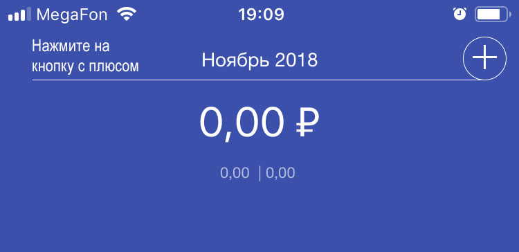Выберите расход/доход или другой тип транзакции
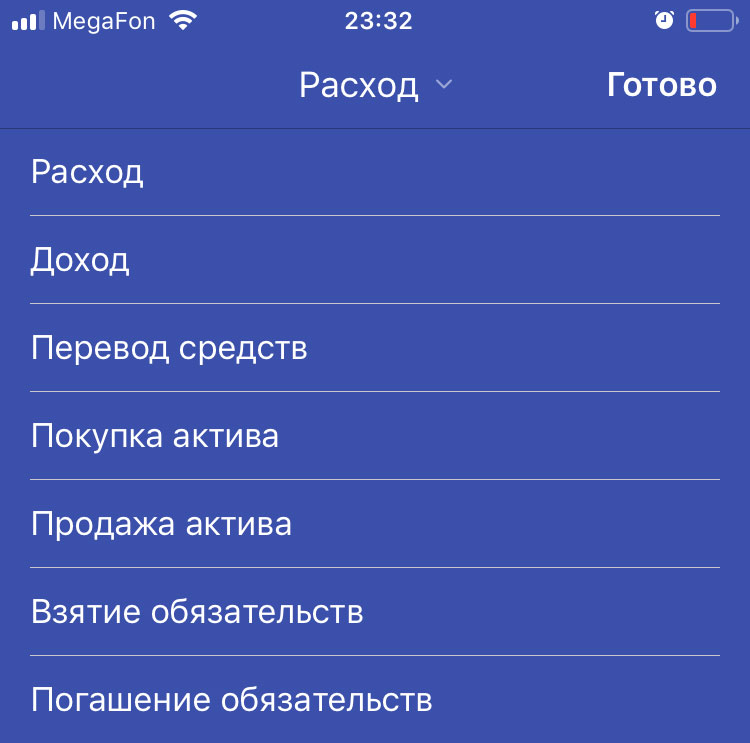Укажите сумму, дату и комментарий.
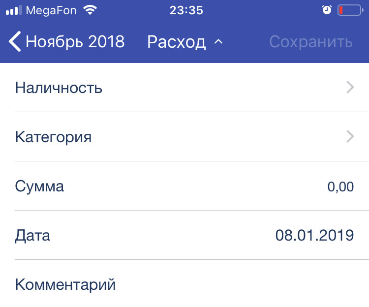Способ второй — быстрый
Кликните по иконке бюджета (дохода/расхода)
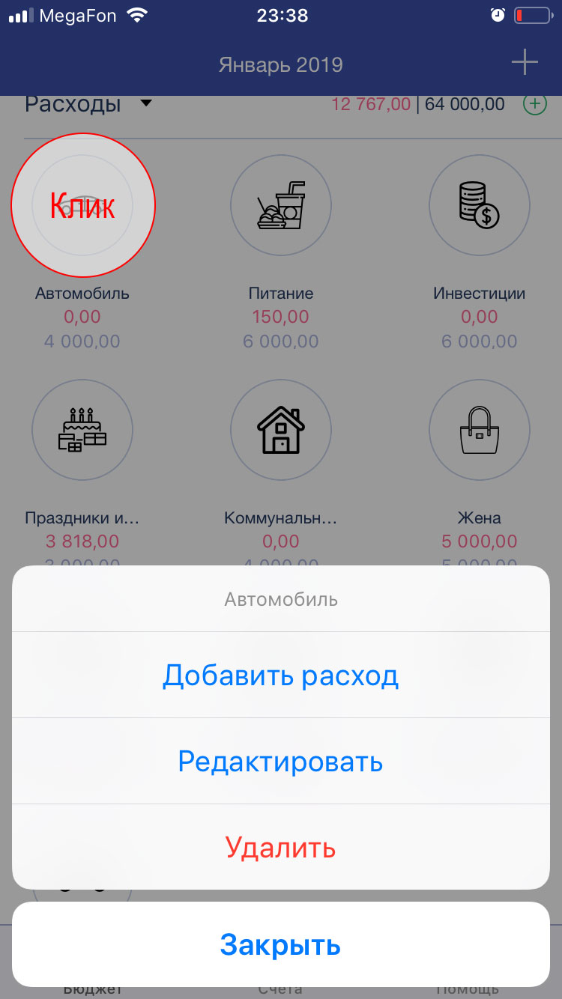Проведите транзакцию